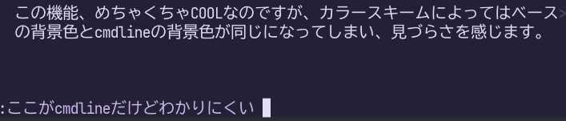
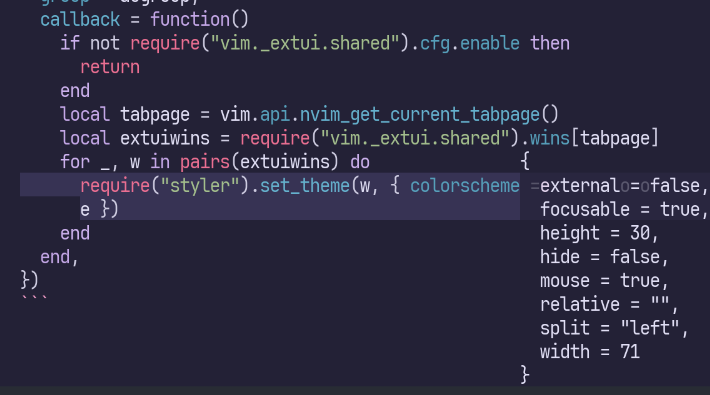
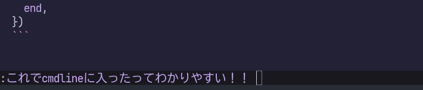
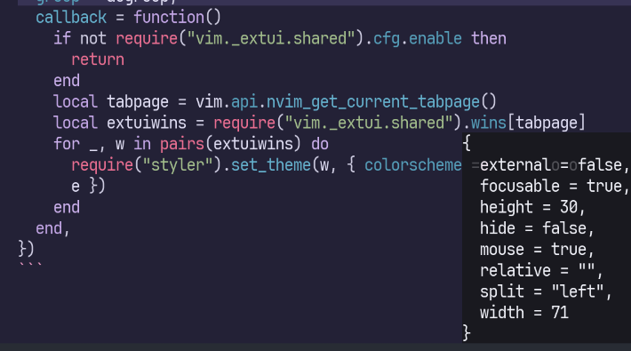

Neovim開発版のexperimentalな機能として、コマンドラインやメッセージをフローティングウィンドウ化するextuiが実装されました。設定方法に関しては2025-05-09に公開された以下の記事を参考にしてください。
Neovim最先端のextuiでcool & smartなcmdlineを手に入れよう by Kawarimidollさん
この機能、めちゃくちゃCOOLなのですが、カラースキームによってはベースの背景色とextuiの背景色が同じになってしまい、見づらさを感じます。

特にメッセージが既存のバッファとかぶったときは最悪です。

素朴にはMsgAreaのハイライト設定でも解決できますが、文字色との相性を考えるのは大変です。
extuiによるcmdlineがフローティングウィンドウであることを利用して、ウィンドウ単位で異なるcolorschemeを適用してみましょう。 folke/styler.nvimが大活躍します。
私はEdenEast/nightfoxの愛用者なので、ベースのcolorschemeにduskfox、extuiのcolorschemeにcarbonfoxを適用してみます。
experimentalな機能のソースコードに強く依存しているので、破壊的変更の影響を受ける可能性に留意しつつ使ってください。
-- 変更すべきパラメータ
vim.cmd.colorscheme("duskfox")
local extui_colorscheme = "carbonfox"
-- extuiのカラースキームを自動設定
local augroup = vim.api.nvim_create_augroup("atusy-extui-cmdline", {})
vim.api.nvim_create_autocmd("CmdlineEnter", {
group = augroup,
callback = function()
if not require("vim._extui.shared").cfg.enable then
return
end
local tabpage = vim.api.nvim_get_current_tabpage()
local extuiwins = require("vim._extui.shared").wins[tabpage]
for _, w in pairs(extuiwins) do
require("styler").set_theme(w, { colorscheme = extui_colorscheme })
end
end,
})これでcmdlineやメッセージの背景色が変化し、非常にみやすくなります。
cmdlineだと、効果はわかりにくいかも……？

メッセージは一目瞭然ですね！

ENJOY